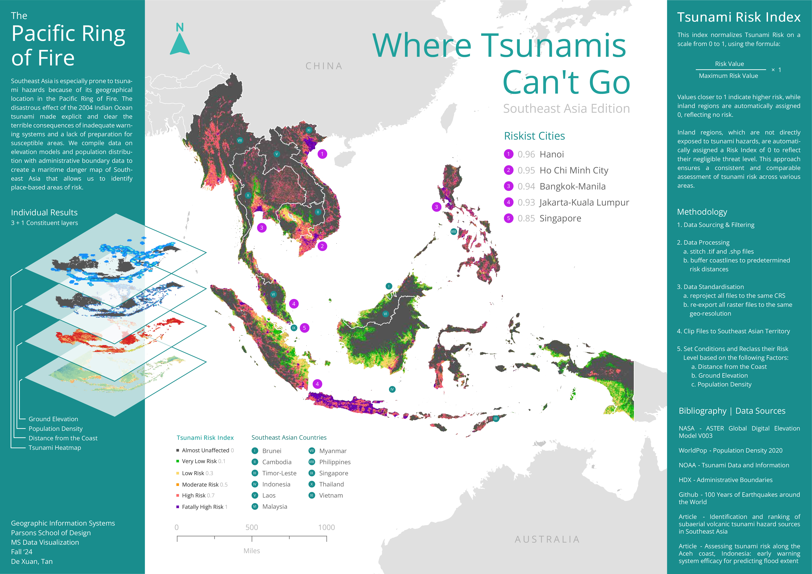

Singapore Government's Expenditure

Singapore's Projected Age Distribution
Food Establishment Inspection Data in the United States, Mapped
All Fireballs and Meteorites Ever Recorded, Mapped...and the ISS and Tiangong too.
Visualizing Singapore Open Data
Trains, Lanes, and Data Grains
Where Tsunamis Can't Go - Southeast Asian Edition

Deep Sea Society - Smithsonian Institution
100 Years of Earthquakes Around the World
Population-Train Station Density Index in the Two Chinas
Sea of Life - Smithsonian Institution
List
Grid